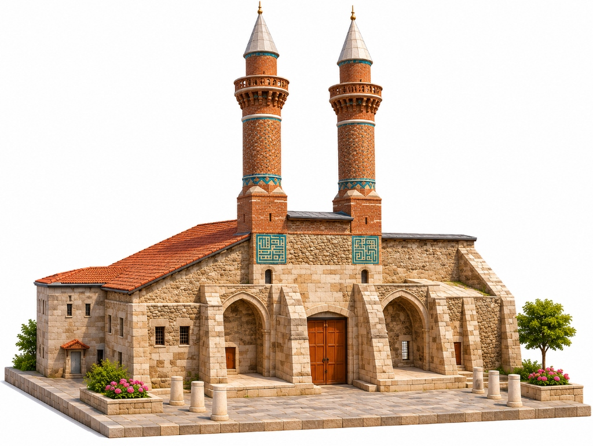

3B Rekonstrüksiyon ve Cephe ModeliÇifte Minareli Medrese (Dârülhadis)
1271 yılında İlhanlı Başveziri Şemseddin Cüveynî tarafından bir Dârülhadis olarak yaptırılan, firuze çinili çift minaresi ve taşa adeta dantel gibi işlenmiş mukarnaslı taçkapısıyla Anadolu'nun en anıtsal medrese cephesidir.
Karşılaştırmalı Tarih İnceleme Modülü
Sivas'taki farklı dönem ve işlevlere sahip tarihî yapıları bilimsel 10 ölçüt üzerinden yan yana karşılaştırın; tarihsel değişim, süreklilik ve mimari tercihlere dair çıkarımlarınızı kaydedin.
| Karşılaştırma Ölçütü | 1. Eser | 2. Eser | 3. Eser |
|---|
Bilimsel Tarihsel Çıkarım Şablonu (TÜBİTAK 2204-B)
İddia • Kanıt • Gerekçe • SonuçYukarıdaki karşılaştırmadan hareketle; tarihsel düşünme basamaklarını kullanarak hipotezinizi ve kanıtlarınızı yapılandırılmış şablona kaydediniz:
Sivas Tarihsel Zaman Çizelgesi (1196 – 1919)
Sivas'ın 800 yılı aşan imar serüveninde Danişmendliler, Selçuklular, Mengücekliler, İlhanlılar, Osmanlılar ve Milli Mücadele dönemlerinin mimari tanıkları kronolojik olarak dizilmiştir.
Okul Dışı Öğrenme Modülü
Müze ve tarihî alanları yalnızca gezilen bir yer olmaktan çıkarıp aktif bir araştırma laboratuvarına dönüştürün.
Tarihî Mekân Gözlem Görevleri
Sivas Kent Meydanı'ndaki eserleri yerinde veya dijital model üzerinde incelerken bu görevleri tamamlayınız:
Ön Test / Son Test Değerlendirme
Gezi öncesinde mevcut tarihsel bilgi düzeyinizi ölçmek için 5 soruyu yanıtlayınız.
Bilimsel Kaynakça ve Arşiv Belgeleri
"Sivas'ın Dijital Tarih Atlası" platformundaki bütün tarihsel dönemler, kitabe transkripsiyonları, baniler ve mimari plan verileri aşağıdaki akademik kaynaklar ve resmî kültür varlıkları envanterleri üzerinden doğrulanmıştır:
Temel Monografiler ve Akademik Eserler
- Karamağara, H. (1964). Sivas Çifte Minareli Medrese Kazısı. Türk Arkeoloji Dergisi, Sayı XIII-2, s. 220–235.
- Kuran, A. (1969). Anadolu Medreseleri, Cilt I. Ankara: Orta Doğu Teknik Üniversitesi Mimarlık Fakültesi Yayınları.
- Sözen, M. (1970). Anadolu Medreseleri: Selçuklu ve Beylikler Devri (Cilt 1-2). İstanbul: İTÜ Mimarlık Fakültesi.
- Kuban, D. (2001). Cennetin Kapıları: Divriği Ulu Camii ve Şifahanesi. İstanbul: Yapı Kredi Yayınları.
- Cantay, G. (1992). Anadolu Selçuklu Dönemi Şifahaneleri. Ankara: Atatürk Kültür Merkezi Yayınları.
- Gabriel, A. (1934). Monuments Turcs d'Anatolie, Tome II: Sivas, Amasya. Paris: De Boccard.
- Öney, G. (1992). Anadolu Selçuklu Çini Sanatı. Ankara: Türkiye İş Bankası Kültür Yayınları.
- Çulpan, C. (1975). Türk Taş Köprüleri (Ortaçağdan Osmanlı Devri Sonuna Kadar). Ankara: Türk Tarih Kurumu Basımevi.
Resmî Kurum Envanterleri ve Arşiv Kayıtları
- T.C. Kültür ve Turizm Bakanlığı, Sivas Kültür Varlıklarını Koruma Bölge Kurulu Tescil Fişleri ve Rölöve Raporları.
- Vakıflar Genel Müdürlüğü, Sivas Vakıf Eserleri Kitabe Külliyatı ve Vakfiyeler Arşivi.
- UNESCO World Heritage Centre, Divriği Great Mosque and Hospital (Ref: 358, Inscribed 1985).
- Atatürk Araştırma Merkezi, Sivas Kongresi Tutanakları ve Heyet-i Temsiliye Belgeleri, Ankara.